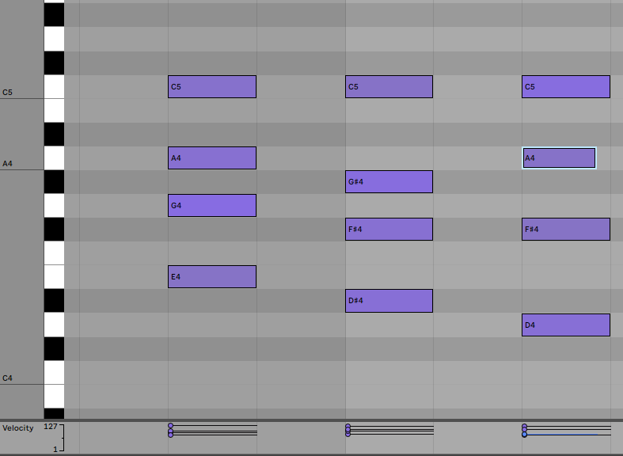

MIDI
Oxygen Pro 61


What is MIDI?
MIDI stands for "Musical instrument digital interface. It is a way for the user to control other instruments or software. In my setup I use it connected to my computer. What happens is that when I press a key, or a drumpad, information about the velocity and pitch gets send to the computer. In my digital audio workspace (DAW for short) I can do stuff with this information. Like attach a digital sound to it. This way I can play almost any (digital) instrument I want. I just need a MIDI-controller and a computer.
More possibilities?
What is also possible with MIDI is controlling real life instruments, like the Deepmind 12. They do need a "MIDI in" port. Luckily my synthesizer has a port like that. The main way I use that port tho is not with my midi controller tho. My audio interface, the Scarlett 4i4 has a "MIDI out" port. This means that I can send MIDI information from my computer to my synthesizer. So what I mainly use it for is to program notes in on my computer, then send them to my synthesizer and then record that sound. This is handy because you can edit MIDI notes separatly, even let the computer stick them to the beat perfectly. So I can program in a pattern of notes that my synthesizer follows exactly and then start tweaking the sounds.
